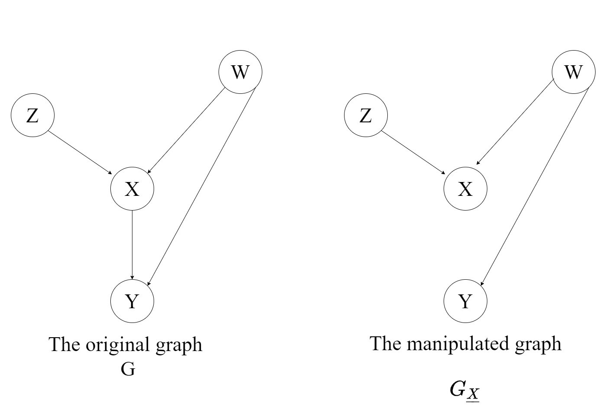
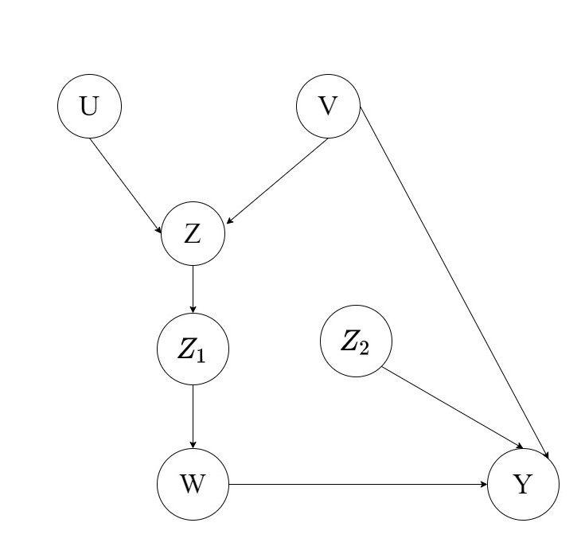

A Brief Introduction to Do-Calculus
Welcome back to Part 3 of The Causal Blog. The previous two parts introduced us to the world of causal inference and what are the various methodologies involved. You can find them right here.
In this part we will be discussing a very popular and useful method known as the do-calculus developed by Judea Pearl in 1995. It was developed to propose a foolproof methodology for identification of causal effects in non parametric models.
Well, that’s a mouthful. What do we mean by that?
In simple words, this means to identify the effect or effects for a particular cause from data that is continuous rather than having discrete values.
We have learned in the previous blogs that it is impossible to do Causal Inference without having some form of intervention on the provided data. To facilitate this do-calculus introduces a mathematical operator called \(do(x)\) which simulates intervention by removing certain functions from the model and by replacing them with a constant \(X=x\). To understand how this plays out we will first have to look at some of the definitions introduced by the authors.
Definitions and Rules
1. Definition 1
The probability distribution of the outcome \[Y\] after the intervention is given by the equation:
\[ P_M(y \mid do(x))=P_{M_x}(y) \]
where the distribution of the outcome \[Y\] is defined as the probability assigned by the model \[M_x\] to each outcome level \[Y=y\]
2. Definition 2
This part talks about when and under what conditions a causal query( whether a variable or a group of variables is the cause for a given effect or not) is identifiable.
Given a set of assumptions \(A\) satisfy two fully specified models \[M_1\] and \[M_2\], the following is the criteria for identifiability:
\[P(M_1) = P(M_2) => Q(M_1) = Q(M_2)\]
This means that whatever the details of the models are, if the distribution of the two models given the same set of assumptions \(A\) are equal then it follows that the causal query for the two models should also be equal. This can be extended to mean that a causal query, under such circumstances can be expressed in terms of the parameters of \(P\).
The 3 Rules of do-calculus
Now that we have learned about the definitions of do-calculus let us familiarise ourselves with the three rules that govern the mathematics of do-calculus. But first we need to understand the necessity of these rules.
In the previous section we learned under what conditions a causal query will be identifiable and we also saw how to formulate an expression in terms of a do-expression, e.g \[P_M(y \mid do(x))=P_{M_x}(y)\]. So when a causal query is given to us in the form of do-expression there are actual mathematical steps that can be taken to resolve it and find out whether the query is identifiable or not.
Consider the following directed acyclic graph \[G\] where \[X\],\[Y\],\[Z\] and \[W\] are arbitrary disjoint nodes. \[G_{\bar{X}}\] is the manipulated graph where all incoming edges to \[X\] have been removed.

Similarly \[G_{\underline{X}}\] is the manipulated graph where all outgoing edges to \[X\] have been removed.

Another useful notation to get familiarised with is the concept of d-separation (\[\perp\perp\]). In very simple words, given the graph \[a \rightarrow c \rightarrow b\] the expression \[ a \perp\perp b \mid c\] means that a is conditionally independent of b given c. To understand d-separation in a more detailed manner have a look at this single page explanation.
Rule 1: Insertion/deletion of observation
\[P(y \mid do(x),z,w)\] = \[P(y \mid do(x),w)\] if \[(Y \perp\perp Z \mid X,W)\] for \[G_{\bar{X}}\]
This means that if \[Y\] is d-separated from \[Z\] given \[X\] and \[W\] then the expression of probability \[P(y \mid do(x),z,w)\] resolves to \[P(y \mid do(x),w)\]. An easier way to understand this is by getting rid of the do-operators on both the sides of the equality sign.
\[P(y \mid z,w)\] = \[P(y \mid w)\] if \[(Y \perp\perp Z \mid W)\] for \[G\]
The above expression simply implies conditional independence within the variables in the distribution given regular d-separation.
Rule 2: Action/observation exchange
\[P(y \mid do(x),do(z),w)\] = \[P(y \mid do(x),z,w)\] if \[(Y \perp\perp Z \mid X,W)\] for \[G_{\bar{X}\underline{Z}}\]
To simplify the expression above let us again remove \(do(x)\) or consider \(X\) to be an empty set.
\[P(y \mid do(z),w)\] = \[P(y \mid z,w)\] if \[(Y \perp\perp Z \mid W)\] for \[G_{\underline{Z}}\]
This expression refers to the backdoor-adjustment criteria that we saw in chapter 2. Therefore this rule gives us the interventional distribution for the backdoor adjustment criteria.
Rule 3: Insertion/deletion of action
\[P(y \mid do(x),do(z),w)\] = \[P(y \mid do(x),w)\] if \[(Y \perp\perp Z \mid X,W)\] for \[G_{\bar{X}\bar{Z(W)}}\]
where \[Z(W)\] is the set of \[Z\] nodes that are not ancestors of any \[W\] node in \[G_{\bar{X}}\].
Again for the sake of simplification let us remove the \(do(x)\) operator from the above expression.
\[P(y \mid do(z),w)\] = \[P(y \mid w)\] if \[(Y \perp\perp Z \mid W)\] for \[G_{\bar{Z(W)}}\]
Now let us take a moment to pause here and really understand what this means. On the paper it means that we do can remove the intervention term \[do(z)\] provided there is no causal association flowing from Z to Y \[(Y \perp\perp Z \mid W)\] in the graph \[G_{\bar{Z(W)}}\].
But that’s not all. We have a strange term called Z(W) which doesn’t quite fit in.
The simplified expression should have been :
\[P(y \mid do(z),w)\] = \[P(y \mid w)\] if \[(Y \perp\perp Z \mid W)\] for \[G_{\bar{Z}}\]
Where removal of incoming edges to Z should result in d-separation of Y and Z and no causal association should flow from Z to Y. However instead of this simple term we end up with an expression containing Z(W). To understand this better let us consider the graph below:

Now the intuitive idea is to remove incoming edges to Z (\[G_{\bar{Z}}\]). But if we do that then we risk changing the distribution of Y altogether through the backdoor path consisting of U and V.
Instead what we can do is take a sub-node of Z say \[Z_2\] which is not an ancestor of any node in W and then remove all the incoming edges to it (\[G_{\bar{Z_2}}\]). This is shown in the figure below.

Conclusion
The rules and definitions of do-calculus provide a general structure for identifying Causal queries. The final query Q should be free of any do-operator, this can be achieved by repeatedly applying the three rules. It is also complete, meaning if there exists a Causal Query Q which is identifiable then it can be identified using do-calculus.
This chapter was aimed at introducing do-calculus very briefly and laying down the rules of the game. The idea is to not intimidate any newcomer with a whole lot of mathematical jargon but to provide an insight into an essentially simple yet powerful framework for causal inference.